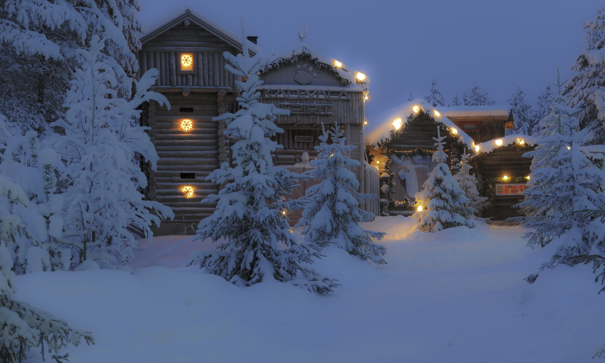
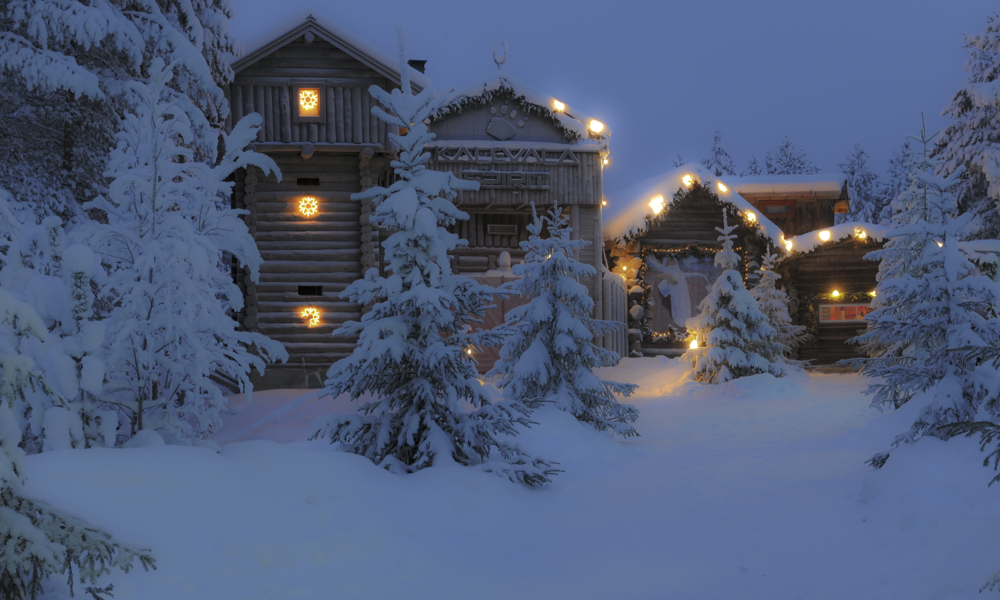
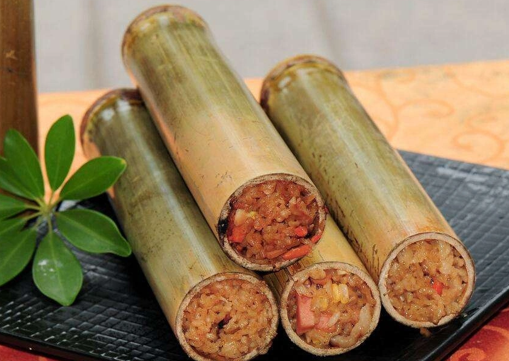
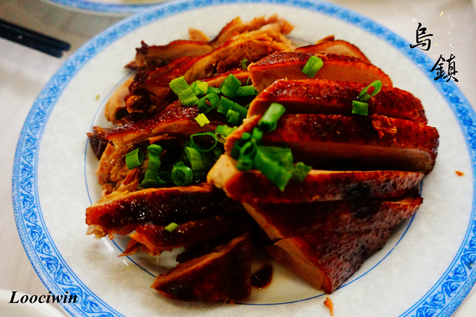
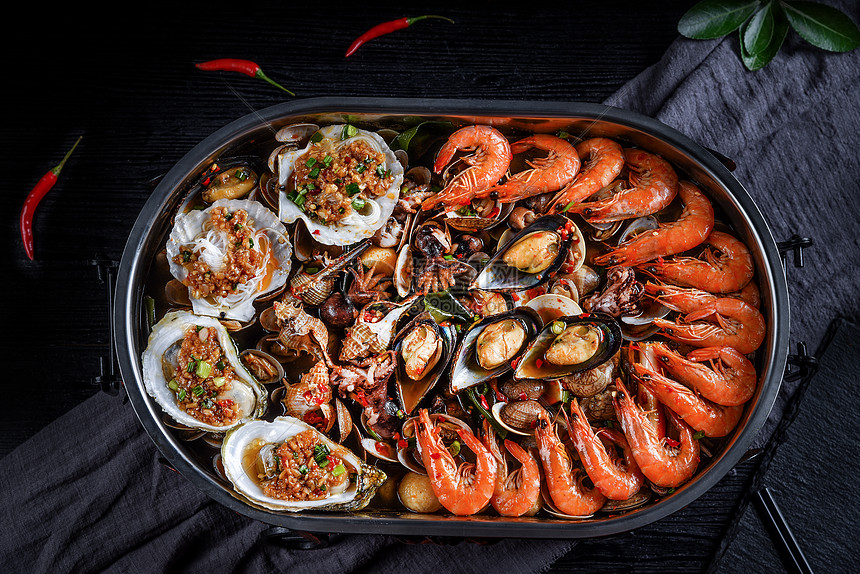
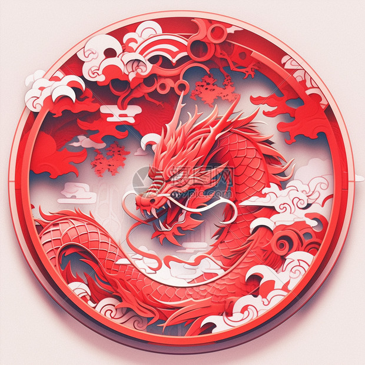
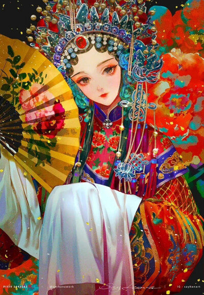
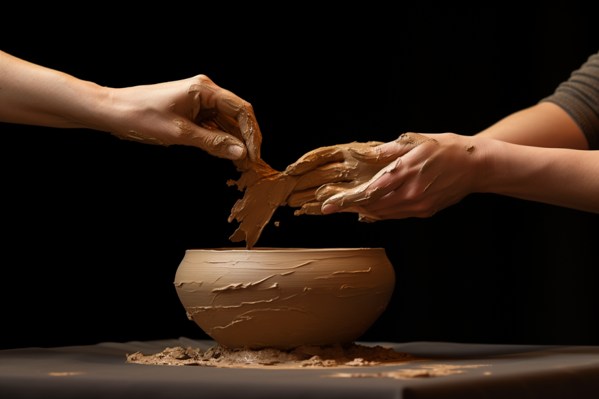

热门景点详细介绍

青峦山水景区
位于群山深处的天然氧吧，景区内瀑布飞流、溪流潺潺，森林覆盖率达95%。这里有徒步栈道、玻璃观景台、竹筏漂流等多种玩法，适合亲子游和户外爱好者。最佳游览季节为4-10月，建议游玩1-2天。
小贴士：景区海拔较高，建议携带薄外套和舒适徒步鞋

水墨古镇
拥有千年历史的江南古镇，青石板路、乌篷船、白墙黛瓦构成了独特的水乡画卷。古镇内保存了大量明清时期的建筑，还有传统手工艺品店、特色茶馆和当地美食。晚上可以欣赏古镇夜景，灯光倒映在河面上美不胜收。
小贴士：建议清晨或傍晚游览，避开人流高峰

蓝海沙滩度假区
中国最美十大海滩之一，沙质细腻洁白，海水清澈见底。这里可以体验冲浪、潜水、沙滩烧烤等项目，周边有多家海景酒店和特色民宿。日出和日落时分的海滩景色最为壮观，是摄影爱好者的天堂。
小贴士：夏季游玩请做好防晒，携带沙滩鞋和防晒用品
当地特色美食

山水竹筒饭
用新鲜竹筒蒸制的米饭，混合腊肉、香菇、糯米，清香扑鼻，口感软糯。

古镇酱鸭
传承百年的腌制工艺，鸭肉色泽红亮，肉质紧实，咸香适中，回味无穷。

海鲜大咖
汇聚多种新鲜海鲜，搭配秘制酱料焖煮，鲜香味美，分量十足，适合多人分享。
地方文化遗产

剪纸艺术
拥有500多年历史的民间艺术，以红纸为原料，用剪刀剪出各种吉祥图案，常用于节日装饰和礼品点缀，已被列入国家级非物质文化遗产名录。

传统戏曲
当地独有的戏曲剧种，唱腔婉转悠扬，表演细腻生动，讲述了许多民间传说和历史故事，是地方文化的重要载体。

手工陶艺
采用当地特有的陶土，经过选料、制坯、上釉、烧制等多道工序制成，成品色泽温润，造型古朴，兼具实用性和观赏性。